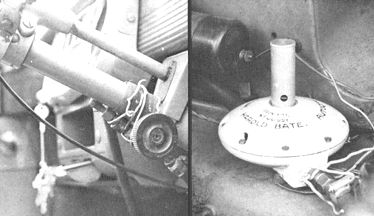

LEFT: Nothing fancy here! Harold has simply ""hay wired"" the methane gas cylinder valve to the steering wheel of his Hillman. RIGHT: The Bate Auto Gas Converter (demand regulator) as mounted in Harold's 1953 Hillman. The white cover here is purely decoration. Note, again, the rather casual manner in which Bate has installed his accessories in his own car.